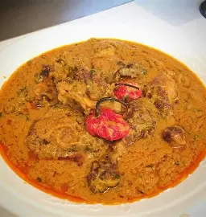
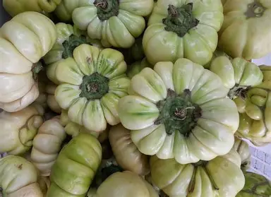
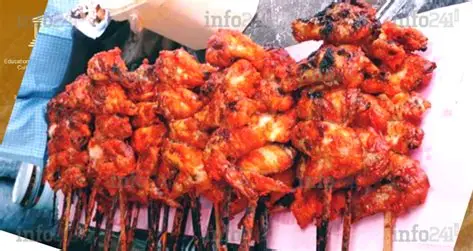

Le poisson braisé, pêché frais dans les rivières ou l’océan Atlantique, est également très prisé, souvent servi avec des bananes plantain, du manioc ou du riz. D’autres plats populaires incluent le folong, le maboké ou encore le odika.

La cuisine gabonaise est un véritable miroir de sa diversité culturelle. Riche, colorée et savoureuse, elle puise ses ingrédients dans la forêt, les rivières, l’océan et les marchés locaux. Elle marie avec subtilité les produits bruts et les savoir-faire ancestraux transmis de mère en fille.
Parmi les plats emblématiques traditionnels, on retrouve le nyembwé, un ragoût onctueux à base de pâte de noix de palme souvent accompagné de poulet ou de poisson. Le plat de feuilles de manioc, dont le nom et la manière de cuisiner peuvent varier selon les régions, est cuit soit avec de l’huile de palme rouge, de la pâte d'arachide ou simplement assaisonné.
Le poisson braisé, pêché frais dans les rivières ou l’océan Atlantique, est également très prisé, souvent servi avec des bananes plantain, du manioc ou du riz. D’autres plats populaires incluent le folong, le maboké ou encore le odika.
L’aubergine gabonaise, souvent petite et sauvage, est un véritable joyau culinaire. Cuite lentement, elle libère une chair tendre et fondante qui s’intègre parfaitement dans les sauces ou se déguste en accompagnement.
Le street food gabonais est un festival de saveurs, reflet vivant de la culture urbaine et populaire du pays. Parmi les incontournables, les nikés sont des ailes de poulet braisées, lentement grillées au feu de bois et assaisonnées avec des épices locales.
Les coupé-coupés, morceaux de mouton ou de porc braisés, sont consommés souvent le matin ou comme repas rapide.

La gastronomie gabonaise ne nourrit pas que le corps. Elle accompagne les moments forts de la vie sociale – naissances, deuils, mariages, initiations – et incarne le lien entre nature, famille et mémoire collective.